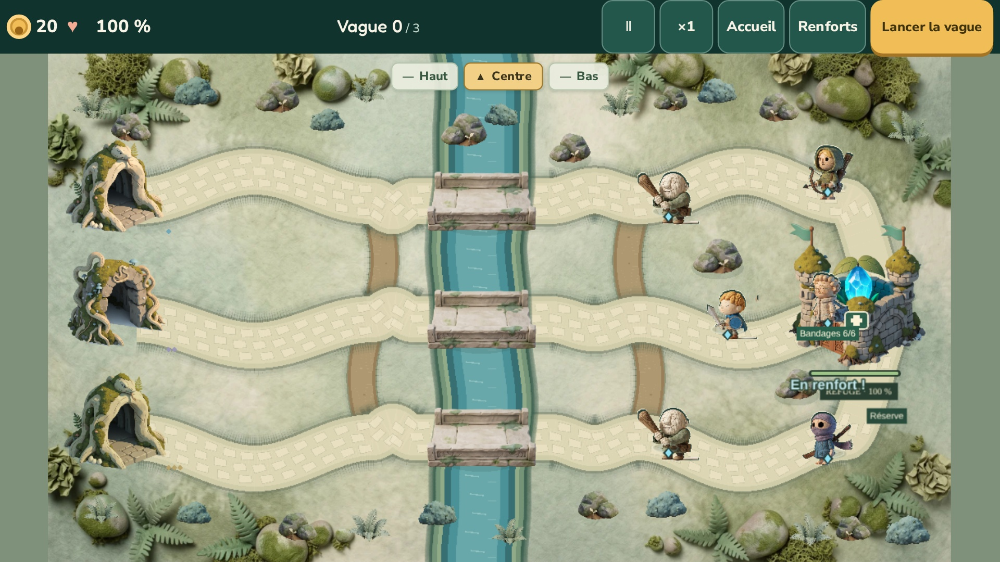
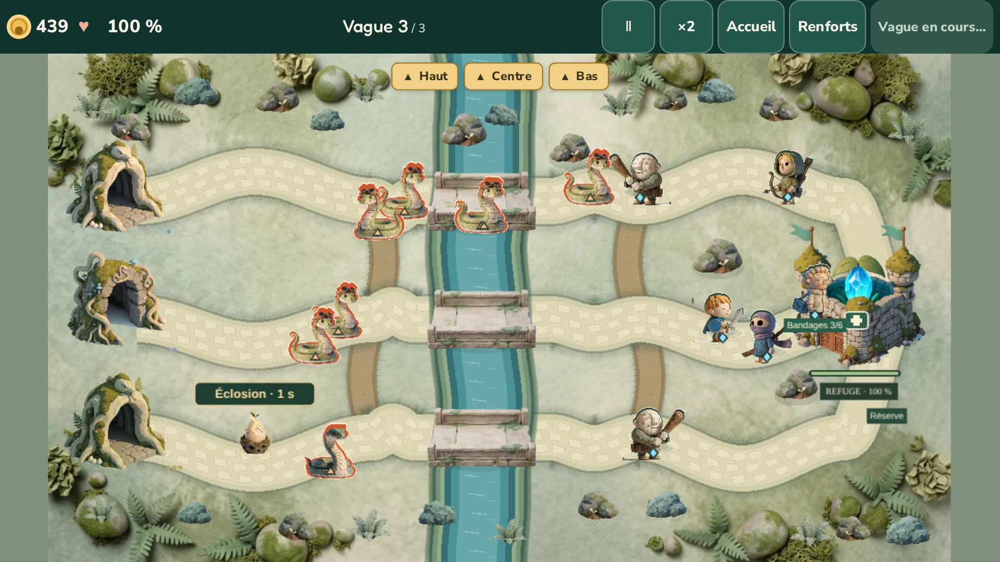
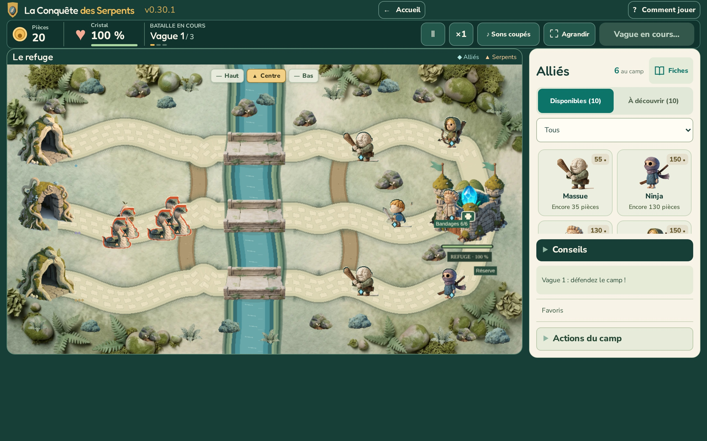
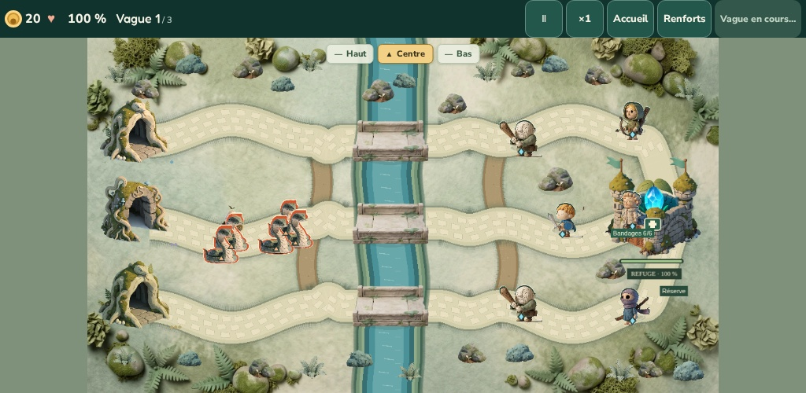
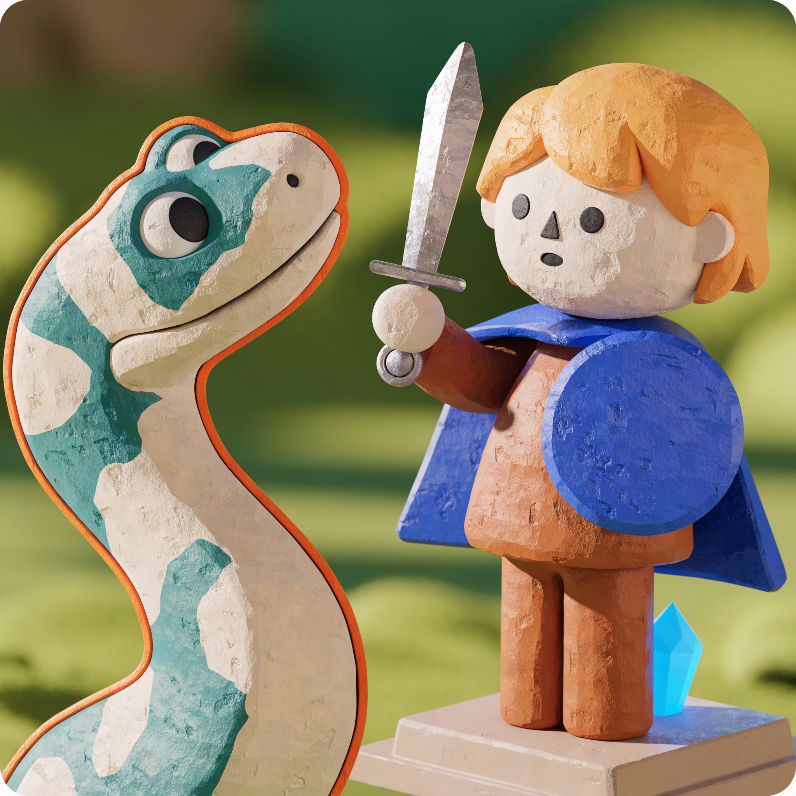

0 erreurs techniques · 13 points à compléter. État : blocked.
Ce dossier prépare la fiche Play. Il ne publie rien et n'envoie rien à Google.
Contrôles techniques recalculés
0 erreur technique détectée dans les données et images actuelles.
Ces contrôles locaux lisent le dépôt. Ils ne certifient ni le compte, ni le manifeste fusionné, ni le trafic réseau du build envoyé.
Le modèle décidé
- Jeu gratuit, sans publicité ni achat dans l'application (décision du parent, 17 et 18 novembre 2026).
- Pas de compte de joueur, pas de serveur, pas d'outil de mesure.
- Le jeu se joue en français et en anglais ; les noms des défis restent en français.
- La seule publicité est celle du site Web, sur grand écran, et elle se coupe : elle ne concerne pas l'application.
L'ancien modèle (publicité entre missions, achats) est abandonné : document historique.
Captures
Captures de navigateur sur un build de production, avec un camp initial légal et des commandes normales. À comparer à l'APK avant usage public.
Ces captures viennent de la version 0.30.1, pas de la version 0.41.0 : elles sont à refaire.










Version 0.30.1 · SHA du build et des images dans captures.json. Pas de résultat Android physique déduit de ces images.
L'icône

Source 2048×2048. Un export carré 512×512 sans coins blancs existe
(resources/android-icon/icon-512.png) ; il n'est pas encore dans le manifeste
des captures.
Textes des fiches
Quatre brouillons pour relecture humaine. Chaque fiche dit que le jeu est en français et en anglais.
Français — brouillon à relire
La Conquête des Serpents
Défends le cristal sur trois voies avec des alliés qui se battent tout seuls.
Les serpents sortent de leur antre. Protège le cristal ! La Conquête des Serpents est un jeu de défense né d'un jeu sur papier inventé par un enfant. Tu choisis tes alliés et tu les places dans ton camp. Ensuite, ils se battent tout seuls sur trois voies reliées entre elles. Dans le jeu : • Six missions, avec un nouveau détachement à préparer à chaque fois. • L'aventure classique : douze vagues, jusqu'à King Snake, le cobra royal à trois têtes, et sa garde. • La Grande Expédition : un long voyage d'étape en étape, avec un défi à chaque étape. • L'aventure sans fin, une fois King Snake vaincu : jusqu'où iras-tu ? • 36 défis nommés par l'enfant qui a inventé le jeu, et des autocollants à gagner dans ton carnet. • Un héros à l'épée et au bouclier, des massues, des archers, des ninjas, des médecins, des bébés dragons et des dinosaures, jusqu'au spinosaure. • Des œufs qui éclosent pendant la bataille, et des serpents qui cherchent la voie la moins défendue. • Du miel pour attirer ou ralentir les serpents. • « Tous les serpents » : une page pour connaître chaque serpent avant de l'affronter. Pas d'ordres à donner : tes alliés trouvent leur chemin et choisissent leurs cibles. Tu gagnes des pièces en repoussant les serpents, et tu les dépenses pour recruter. Un allié tombé ne revient pas : prépare bien ton camp. Pour les parents : • Pas de publicité et pas d'achat dans l'application. • Pas de compte à créer. La progression reste sur l'appareil, jusqu'à quatre joueurs. • La sauvegarde familiale exporte l'aventure dans un fichier, après une question pour adulte. Le jeu est disponible en français et en anglais. Les noms des défis restent en français, comme leur créateur les a écrits.
English — brouillon à relire
Snake Attack TD
Defend the crystal on three lanes with allies who fight on their own.
The snakes are leaving their den. Protect the crystal! Snake Attack TD (La Conquête des Serpents in French) is a defense game that began as a paper game invented by a child. You choose your allies and place them in your camp. Then they fight on their own across three connected lanes. In the game: • Six missions, each with a new squad to prepare. • The classic adventure: twelve waves, up to King Snake, the three-headed king cobra, and his guards. • The Great Expedition: a long journey from stage to stage, with a challenge at each stage. • The endless adventure, once King Snake is beaten: how far can you go? • 36 challenges named by the child who invented the game, and stickers to win for your sticker book. • A hero with sword and shield, clubbers, archers, ninjas, medics, baby dragons and dinosaurs, up to the spinosaurus. • Eggs that hatch during the battle, and snakes that look for the least defended lane. • Honey to lure or slow down the snakes. • “All the snakes”: a page to get to know each snake before you face it. No orders to give: your allies find their way and pick their targets. You earn coins by pushing back the snakes, and you spend them on new allies. A fallen ally does not come back, so prepare your camp well. For parents: • No ads and no in-app purchases. • No account to create. Progress stays on the device, for up to four players. • The family save exports the adventure to a file, after a question for adults. The game is available in French and English. The names of the challenges stay in French, as their creator wrote them.
Deutsch — brouillon à relire
Snake Attack TD
Verteidige den Kristall auf drei Wegen mit Verbündeten, die allein kämpfen.
Die Schlangen kommen aus ihrem Bau. Beschütze den Kristall! Snake Attack TD (auf Französisch: La Conquête des Serpents) ist ein Verteidigungsspiel. Es begann als Papierspiel, das sich ein Kind ausgedacht hat. Du wählst deine Verbündeten und stellst sie in dein Lager. Dann kämpfen sie selbstständig auf drei verbundenen Wegen. Im Spiel: • Sechs Missionen, jedes Mal mit einer neuen Truppe. • Das klassische Abenteuer: zwölf Wellen bis zu King Snake, der dreiköpfigen Königskobra, und seiner Garde. • The Great Expedition: eine lange Reise von Etappe zu Etappe, mit einer Herausforderung auf jeder Etappe. • Das endlose Abenteuer, sobald King Snake besiegt ist: Wie weit kommst du? • 36 Herausforderungen, benannt von dem Kind, das das Spiel erfunden hat, und Sticker für dein Stickerheft. • Ein Held mit Schwert und Schild, Keulenkämpfer, Bogenschützen, Ninjas, Sanitäter, Babydrachen und Dinosaurier bis hin zum Spinosaurus. • Eier, die während der Schlacht schlüpfen, und Schlangen, die den am schwächsten verteidigten Weg suchen. • Honig, um die Schlangen anzulocken oder zu bremsen. • Eine Übersicht aller Schlangen, damit du jede kennst, bevor du gegen sie antrittst. Du gibst keine Befehle: Deine Verbündeten finden ihren Weg und wählen ihre Ziele. Für zurückgeschlagene Schlangen bekommst du Münzen, mit denen du neue Verbündete anwirbst. Ein gefallener Verbündeter kommt nicht zurück. Bereite dein Lager also gut vor. Für Eltern: • Keine Werbung und keine In-App-Käufe. • Kein Konto nötig. Der Fortschritt bleibt auf dem Gerät, für bis zu vier Spieler. • Die Familiensicherung exportiert das Abenteuer in eine Datei, nach einer Frage für Erwachsene. Das Spiel ist auf Französisch und Englisch verfügbar. Es ist nicht ins Deutsche übersetzt. Die Namen der Herausforderungen bleiben auf Französisch, so wie ihr Erfinder sie geschrieben hat.
Italiano — brouillon à relire
Snake Attack TD
Difendi il cristallo su tre corsie con alleati che combattono da soli.
I serpenti escono dalla loro tana. Proteggi il cristallo! Snake Attack TD (in francese: La Conquête des Serpents) è un gioco di difesa nato da un gioco su carta inventato da un bambino. Scegli i tuoi alleati e mettili nel tuo accampamento. Poi combattono da soli su tre corsie collegate tra loro. Nel gioco: • Sei missioni, ogni volta con una nuova squadra da preparare. • L'avventura classica: dodici ondate, fino a King Snake, il cobra reale a tre teste, e alla sua guardia. • The Great Expedition: un lungo viaggio di tappa in tappa, con una sfida a ogni tappa. • L'avventura senza fine, dopo aver battuto King Snake: fin dove arriverai? • 36 sfide con i nomi scelti dal bambino che ha inventato il gioco, e adesivi da vincere per il tuo album. • Un eroe con spada e scudo, combattenti con la clava, arcieri, ninja, medici, cuccioli di drago e dinosauri, fino allo spinosauro. • Uova che si schiudono durante la battaglia, e serpenti che cercano la corsia meno difesa. • Il miele per attirare o rallentare i serpenti. • Una pagina con tutti i serpenti, per conoscerli prima di affrontarli. Nessun ordine da dare: i tuoi alleati trovano la strada e scelgono i bersagli. Respingendo i serpenti guadagni monete, che spendi per reclutare nuovi alleati. Un alleato caduto non torna: prepara bene il tuo accampamento. Per i genitori: • Nessuna pubblicità e nessun acquisto in-app. • Nessun account da creare. I progressi restano sul dispositivo, fino a quattro giocatori. • Il salvataggio di famiglia esporta l'avventura in un file, dopo una domanda per adulti. Il gioco è disponibile in francese e in inglese. Non è tradotto in italiano. I nomi delle sfide restano in francese, come li ha scritti il loro creatore.
Prochaines décisions et vérifications
- Nom de développeur, adresse de contact publique et type de compte Play à confirmer par le parent.
- Vérifier en ligne que la page de confidentialité nomme la version envoyée et dit la même chose que l’application.
- Sécurité des données : à remplir par le parent dans la Console, après relevé du manifeste fusionné et du trafic du build exact.
- Public cible (tranches d’âge) à choisir par le parent.
- Questionnaire IARC à remplir dans la Console ; aucun classement présumé.
- Fiches FR, EN, DE et IT à relire par un humain.
- Captures, bannière et icône à relire face au build envoyé.
- Manifeste fusionné (permissions) et trafic réseau du build exact à relever.
- Essai du build exact sur un téléphone physique.
- AAB signé du build exact à vérifier.
- Test fermé à mener jusqu’au bout (testeurs et durée exigés par Google) avant la production.
- Captures de la version 0.30.1, jeu en 0.41.0 : à refaire (npm run build puis npm run store:captures).
- Icône 512×512 à ajouter au manifeste des captures (export prêt : resources/android-icon/icon-512.png).
La décision finale appartient au parent et à la Play Console. Le contrôle local n'autorise aucune publication automatique.